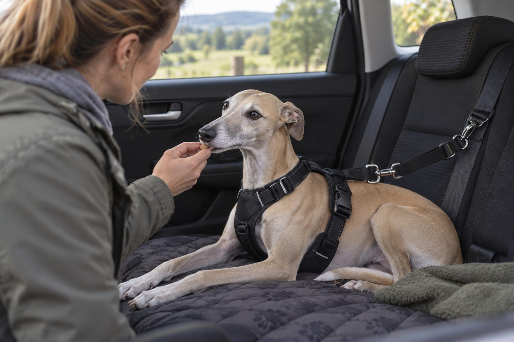

Start with a parked car, pair short steps with rewards, and build gradually; speak to your veterinarian if nausea or severe distress is involved.
A dog who worries in the car may pant, pace, whine, or refuse to climb in. Motion sickness and fear can look similar and may happen together. A gradual plan works best when the dog can stay below their distress threshold.
Check comfort and safety first
Use a suitable secured carrier or crash-tested restraint according to its instructions. Keep the car ventilated and at a comfortable temperature. Never leave a dog alone in a parked car, even when the weather seems mild.
If your dog drools, vomits, or appears nauseated, ask your veterinarian about motion sickness before treating the issue only as training.
Begin by separating discomfort from fear. A dog that drools, swallows repeatedly, or vomits on short trips may be dealing with motion sickness; a dog that refuses to approach the parked car may be anticipating a frightening experience. Both can happen together. Note exactly when signs start: at the sight of keys, when the door closes, after the engine starts, or once the car moves. Share that timeline with a veterinarian before treating the problem as a simple training issue.
Safety is part of comfort. Use a properly fitted travel restraint or suitable carrier that limits dangerous movement without causing distress. Keep the car ventilated and at a comfortable temperature. Never leave a dog alone in a parked car, even for a short errand. A calm travel plan begins with a secure physical setup and a dog who can breathe and rest comfortably.
Begin before the engine starts
Let your dog approach the parked car at their own pace. Reward a look toward it, a step closer, and then entering briefly. End each session before the dog becomes upset. Repeat until the car predicts calm, pleasant experiences.
Next, sit together with the engine off, then try the engine on without moving. Only when those steps are comfortable should you take a very short drive.
Practice in a parked car before planning a long drive. Let the dog approach voluntarily, reward a calm look toward the open door, and end the session before worry rises. Later, practice entering and sitting in the travel position with the engine off. Add the sound of the engine on another day, then a very short drive. If the dog becomes frightened, return to the last successful step rather than repeating the difficult one until it gives up. Several short, successful sessions are often more useful than one forced trip.
Use a reward the dog enjoys but do not keep feeding through obvious nausea. If motion sickness is suspected, ask the veterinarian about treatment and about meal timing before travel. Do not give a human anti-nausea or sedating medicine without veterinary direction. The aim is to make travel physically tolerable while a positive association develops.

Build good travel habits
Choose a quiet route and a pleasant destination. Bring a familiar blanket and allow time for a walk before travel. Feed meals at a sensible interval before the trip based on veterinary advice if nausea is an issue.
Do not force the dog into the car or rely on a single long drive to get them used to it. Small successful repetitions help more than one overwhelming outing.
Make early destinations pleasant and predictable when you can. A short drive to a quiet walking place may create a different expectation from a car used only for stressful appointments. Keep entry and exit routines calm; let the dog settle before starting the engine. Secure loose items so they do not slide toward the dog. Use a familiar blanket if it can be safely placed with the restraint. Ask another person to observe the dog on initial trips so the driver can focus on the road.
Watch for signs that the dog is coping: relaxed posture, ability to take a reward, normal breathing, and recovery after a brief stop. Trembling, frantic movement, repeated vomiting, or refusal to reenter the car tells you the plan is moving too fast or a medical issue needs attention. Record trip length and symptoms. Progress is about comfort, not mileage.
Build travel comfort in small steps
- Approach a parked carThe dog can choose to come near and remains relaxed.
- Sit secured with the engine off, then onThe dog settles without clear distress at each separate step.
- Take a very short driveThe dog can recover comfortably afterward; otherwise step back.
Drooling or vomiting may need veterinary attention for motion sickness.
When to ask for help
A veterinarian can discuss physical causes and safe options for severe nausea or anxiety. A qualified reward-based trainer can help plan gradual exposure. If your dog is panicked, pause the training and get guidance rather than pushing on.
For necessary travel before training is complete, plan conservatively. Speak with the veterinarian about motion sickness or severe anxiety, choose a direct route, and allow extra time for breaks. A dog should not ride loose on a person's lap or move freely near the driver. Check that the restraint fits before departure and that the dog's collar or harness cannot snag. Do not place a carrier where an airbag could strike it. Follow the equipment manufacturer's instructions and any local requirements.
If a dog vomits, clean the area and observe how it recovers. Repeated vomiting, weakness, or signs of dehydration warrant veterinary advice. Do not punish an accident in the car. A dog cannot choose not to feel nauseated. A thoughtful plan addresses the cause and prevents the next trip from adding another bad memory.
Practical details
First decide whether nausea is part of the problem
Drooling, lip licking, vomiting, and reluctance after motion can suggest nausea. Panting or refusal to approach the car may also reflect fear. The two can occur together: a dog that feels sick on every trip may learn to fear the vehicle. Tell your veterinarian exactly when signs begin, whether the engine is running, and whether vomiting occurs. A training plan alone may be unfair if the dog is physically uncomfortable.
Do not feed a large meal immediately before travel without considering veterinary advice, and do not give human motion-sickness medicine on your own. A veterinarian can assess the pattern and recommend safe options when needed. Once nausea is addressed, short positive exposures become more meaningful.
A gradual car-confidence ladder
- ApproachReward a calm look at the parked car before asking the dog to enter.
- SettleLet the dog sit in a secure restraint with the engine off for a few seconds.
- Add soundStart the engine briefly without moving, then end on a calm note.
- Drive brieflyTry a short route to a pleasant place and lengthen trips only when the dog copes well.
Build success before the first drive
Start near a parked, cool car in a quiet place. Reward curiosity and let the dog leave. The next session may involve stepping into the car, then sitting in the carrier or harness for a moment. Keep each step short enough that the dog remains able to take a treat and respond normally. If the dog freezes, pulls away, or trembles, return to an easier step.
Use a suitable restraint or carrier secured according to its instructions. A dog riding loose risks injury and can distract the driver. Never leave a dog in a parked car, even when the temperature seems mild. Comfort and safety are part of the same plan.
Consider a dog that is relaxed in the parked car but begins drooling after five minutes of driving. That pattern suggests discussing motion sickness with a veterinarian before simply increasing exposure. Another dog backs away as soon as the car door opens yet travels comfortably once inside; that dog may benefit from slower entry practice. These are examples, not diagnoses. Your observations help professionals decide where to focus.
Keep the first successful journeys short. Stop while the dog still appears comfortable and repeat the same easy step before increasing distance. A sudden hour-long trip can undo a week of gentle practice. If your schedule requires regular travel, ask a reward-based trainer for help building a practical progression. Avoid forcing the dog into repeated distress in the hope it will adapt.
Make the trip predictable
Choose a quiet route and a destination the dog enjoys, not only the veterinary clinic. Bring familiar bedding, keep the vehicle ventilated, and allow a calm walk before leaving. During early practice, a very short drive may be enough. A successful two-minute trip is more useful than a long outing that ends in panic.
If the dog remains distressed, ask a qualified reward-based trainer and your veterinarian for help. They can decide whether the plan needs smaller steps or medical support. Progress may take weeks. The goal is a dog that can travel safely and recover calmly, not a dog that merely stops making noise.
Review the travel plan as the dog ages. Joint discomfort can make climbing into a vehicle hard even for a dog that once loved car rides. A ramp or lower entry point may help if a veterinarian confirms it is appropriate. A change in hearing, balance, or health can also alter travel tolerance. If a formerly relaxed dog suddenly becomes fearful or nauseated, seek veterinary advice rather than assuming it forgot its training.
Keep a short checklist by the door: restraint, water for longer trips, cleanup supplies, contact information, and any veterinary instructions. Familiar preparation reduces rushing, which can affect both people and dogs. The goal is a safe journey that the dog can manage, built from small steps and adjusted whenever the animal's response changes.
A travel log can reveal where the difficulty begins. Record whether the dog approached the car, accepted the restraint, took a reward, drooled, vomited, or recovered quickly afterward. Include trip length and destination. This helps separate a dog that fears entry from one that becomes sick only when moving. Share the record with a veterinarian, particularly if nausea is suspected, and with a reward-based trainer if fear remains after physical comfort is addressed.
For a longer necessary trip, prepare safe breaks and carry water, cleaning supplies, and current contact information. Check the restraint before departure and keep the car cool and ventilated. Do not use a sedating product simply to make the dog quiet without veterinary guidance. A calm-looking dog may still feel sick or frightened. Progress should be measured by relaxed behavior and recovery, not by the absence of barking alone. Return to shorter steps whenever the dog's response shows the plan is too difficult.
Practice before the next long drive
Begin with the parked car in a quiet place. Let your dog explore without starting the engine, reward relaxed behavior, and end the session while the dog is still comfortable. On another day, practice sitting in the secured travel position with the engine on. Follow with a very short trip that ends somewhere pleasant. Gradual steps make it easier to see exactly when worry or nausea begins.
Keep the travel setup consistent: a secure restraint or properly sized carrier, comfortable ventilation, and a calm entry routine. Avoid a heavy meal immediately before travel if your veterinarian has advised against it, but never withhold needed medication or water without guidance. Watch for drooling, repeated swallowing, vomiting, trembling, or refusal to approach the car; these clues can point toward motion sickness as well as fear.
If your dog becomes distressed despite short practice sessions, ask a veterinarian about motion sickness and a qualified reward-based trainer about behavior support. Do not force a panicked dog into repeated long rides to make it get used to them. A short log of trip length, symptoms, and what helped will guide the next step. Safety and comfort matter more than reaching a particular training deadline.
Continue exploring
For a broader routine, read How to Stop a Dog From Barking at Everything, How to Help a Cat Adjust to a New Home, and How to Teach a Dog to Settle on a Mat.
Frequently Asked Questions
Why does my dog pant in the car?
Heat, excitement, anxiety, or nausea are possible. Check the environment and ask a veterinarian if it is intense or new.
Should I let my dog ride loose?
No. Use an appropriate secured restraint or carrier for safety.
How long does car training take?
It varies. Move at the dog's pace and focus on many calm short sessions.
Editorial references
These resources informed the general guidance in this article. They do not replace advice tailored to your pet.
This guide offers general information. Your pet’s age, health, and history may call for a different plan. For medical concerns, ask your veterinarian.